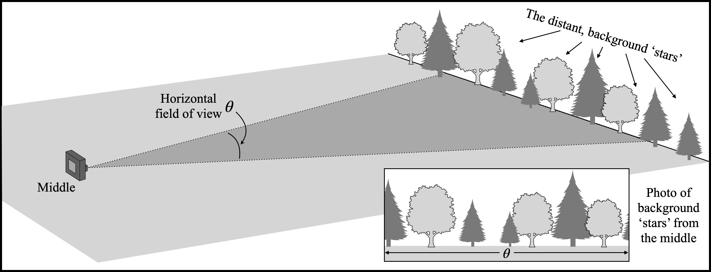
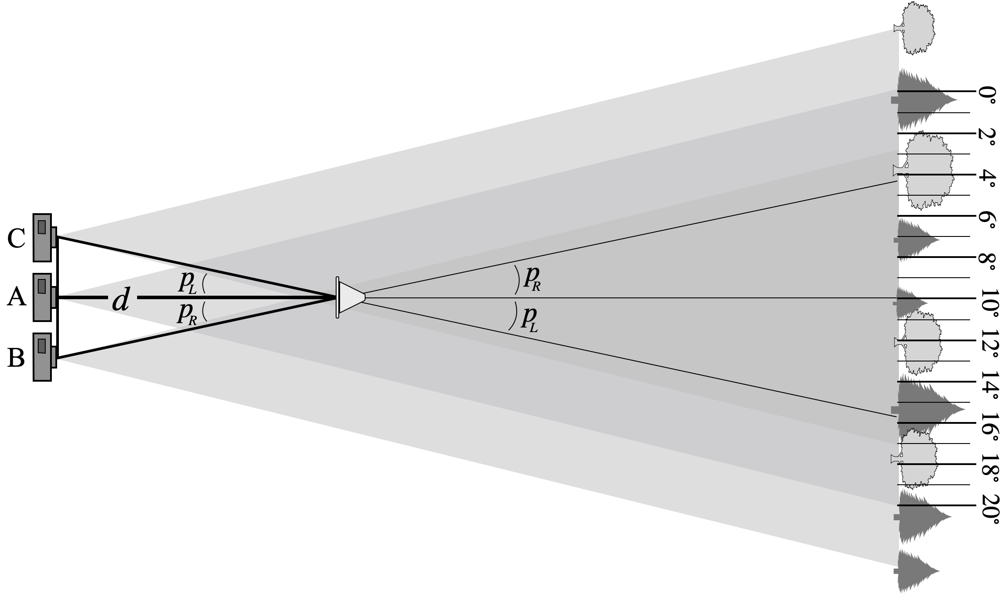

Encounters with the Cosmos – Using Parallax to Measure Distance – Name:
Our primary way to measure the distance to nearby stars is through the use of parallax (an apparent change in position of an object due to the motion of an observer). As the Earth moves in its orbit throughout the year, our change in position causes a continuous change in perspective. The diagram below shows the Earth at four different positions in its orbit.
Look at the three panels at the bottom of the figure and notice that the ‘nearby star’ appears to move relative to the background ‘distant stars’. By measuring the amount that the nearby star moves throughout the year, we can measure its distance \(d\) from the Earth.
Note that this figure drastically exaggerates the closeness of both the nearby and distant stars. In reality, the Earth – Sun distance (1 AU) is extraordinarily small relative to \(d\). When studying real stars, \(d\) ranges from a few light years up to a few hundred light years. Meanwhile, the distant stars are at least thousands of light years away, effectively stationary.
Your goal in this lab is to measure the distance to use a nearby ‘star’. Your star (a flag) will be placed in a large open field. You will then take photos of it from different positions. In the photos you take, the flag will shift relative to the background stars (the distant trees far across the field). Before you can head out and start snapping photos, you need to determine the field of view of your camera.
When you take a photograph, the amount of the subject you capture is determined by two things: 1) the distance between the camera and the subject and 2) the field of view (FOV) of your camera. FOV is defined by the angle that the camera sees both left-right, and also up-down. As such, it is measured in square degrees (see the dashed region in the figure below). When you want to make an image larger you either 1) get closer to the subject or 2) decrease the FOV which is done by zooming in.

Your task, then, is to measure the FOV of our camera. In our case, we are only interested in side-to-side motion, so you only need to know the the horizontal FOV. This quantity is represented by the angle \(\theta\) in the figure below.

Find \(\theta\) with the following steps:
Stand back from a wall and face it straight on. In landscape
(horizontal) mode, take a photograph using a low zoom factor. For most
modern cell phones, about 1x zoom should work great.
Record the zoom value of your photo (remember, zooming changes the FOV) here: \[{\rm Zoom = \hspace{2cm}}\]
Measure the distance \(d\) from the camera to the wall. Record it here: \[d = \hspace{1.25cm}\]
Look at the picture you took and use it to find the edges of the region on the wall that you photographed. Measure this length \(l\) and record it here: \[l = \hspace{1.25cm}\]
With \(d\) and \(l\) we now have enough information to
compute the horizontal FOV \(\theta\),
as follows:
The triangle to the right represents half of the horizontal FOV of our camera. Since it is a right triangle, we can use basic trigonometry to relate \(\theta\) to \(d\) and \(l\). The tangent of an angle equals ‘opposite over adjacent’ so \[\tan (\theta/2) = \frac{l/2}{d} = \frac{l}{2d}.\] Solve for \(\theta\) by using the \(\tan^{-1}\) function. \[\theta/2 = \tan^{-1} \left( \frac{l}{2d} \right) \qquad \Longrightarrow \qquad \theta = 2\tan^{-1} \left( \frac{l}{2d} \right)\] Using this formula, find your value of \(\theta\). (Make sure your calculator is set to degrees!) Record your \(\theta\) here: \[\hspace{3.7cm} \theta =\]

You are now ready to go outside and measure the distance to your star!
You should now head out to a large field, with trees in the distance (several hundred feet away). For the purpose of this exercise, those trees will play the role of our background stars. You want them so far away that they barely move when you walk back and forth. Take a photo of those distant trees making sure your camera is set to the same zoom value you used while determining your FOV. Note the location where you took the photo. Call it Position A.

Now your teacher will place a ‘star’ (a cone) a distance \(d\) (maybe 50 - 100 feet) in front of you. You will take photos of the cone from three different locations. As you change your position the background trees will appear to move. By carefully measuring “how much” they move we can measure the distance to the cone. Your teacher will use a tape measure to find the actual distance \(d\) from Position A to the cone. Once you’ve made your parallax measurements, you can compare your inferred distance to what was directly measured.
Standing at the same spot as the last photo (Position A), take a photo of the cone with the trees in the background.

Move to your right a distance \(r\) (no more than 5 meters). Notice how the trees behind the cone appear to have changed. Make note of your location and take another photo. Call this location Position B.

The distance moved from side-to-side is called the baseline. Record the baseline distance (in feet) \(b_R\) between Positions A and B here: \[b_R = B - A = \hspace{1.25cm}\]
Finally, move to the left of Position A to a new location. Call this Position C. Take a third photo of the cone. Again, the distant trees behind the cone should appear to have moved.

Record the baseline distance (in feet) \(b_L\) between Positions A and C here: \[b_L = A - C = \hspace{1.25cm}\]
You will now figure out exactly how much the cone appeared to shift as you moved between Positions A, B and C.
Print out the photo you took of the background trees (with no cone present). Ask your professor or TA if you need help printing. Your next step is to use a pen and ruler to mark out even degree spacings on this photo. Proceed as follows.
What was the horizontal FOV, \(\theta\)? You found it above in Sec. 2: \[\theta = \hspace{1.15cm}\]
Use a ruler to measure the width \(w\) of your printed photo in centimeters. Record the value here: \[w = \hspace{1.25cm}\]
Compute the number of centimeters per degree by dividing: \[\frac{w}{\theta} = \hspace{1.25cm}\]
With this value, use a ruler to mark off even degree spacings on your photograph. An example of what at \(20^\circ\) FOV would look like is shown below.

Look at the photo you took of the cone from Position A. Note the cone’s location relative to the background trees. Compare its position to the prepared image from the previous section. What is the angular location of the cone, as seen from Position A? \[\theta_A = \hspace{1.4cm}\] Now, look a your photos from Positions B and C. Again, look at the trees behind the cone, compare to your image with marked degrees, and determine these positions of the cone: \[\theta_B = \hspace{3.4cm} \theta_C =\]
We define the parallax angle as the angle by which the cone appears to move when you change locations. You took photos of your star from three positions. The first position (A) is the baseline. The angle \(p_R\) (see the figure above) represents the amount by which the cone appeared to move when going to the right from A to B. Likewise, \(p_C\) gives the amount the cone shifted when going to the left from A to C. Record your parallax angles here: \[p_R = \theta_A - \theta_B = \qquad \qquad \qquad \qquad p_L = \theta_C - \theta_A =\]

Before you actually compute the distance to your star from the parallax measurements, write down a guess for how far you think the star was \[d_{\rm guess} =\]

Finally, we have all the pieces in place to determine the distance to our star. Because we have measured two baseline distances and two parallax angles, we have two measurements of distance to the star: \[d_L = \frac{b_L}{\tan p_L} = \qquad \qquad \qquad \qquad d_R = \frac{b_R}{\tan p_R} =\] Are your two measurements the same? Are they close to the guess you made?